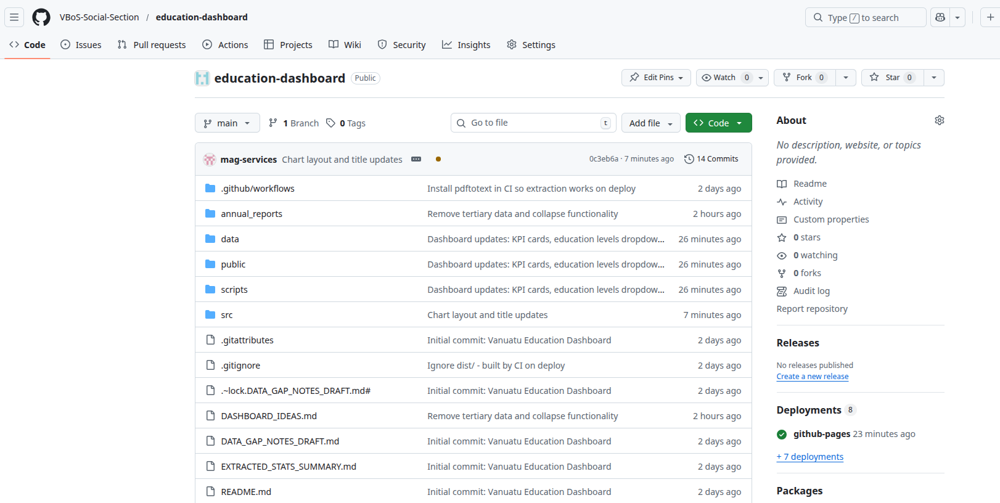
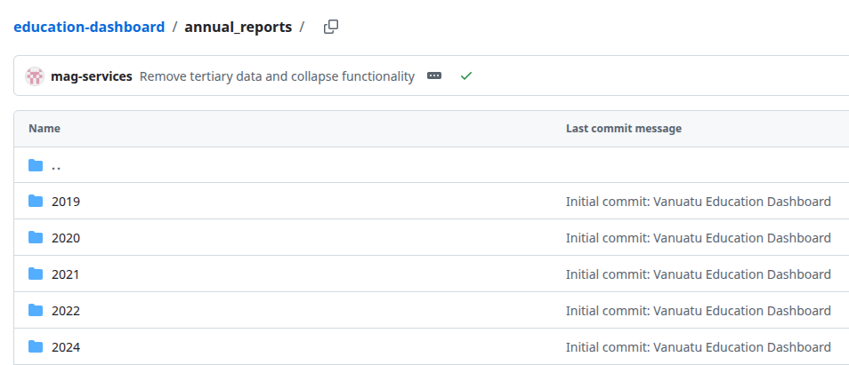
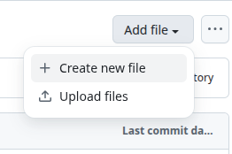
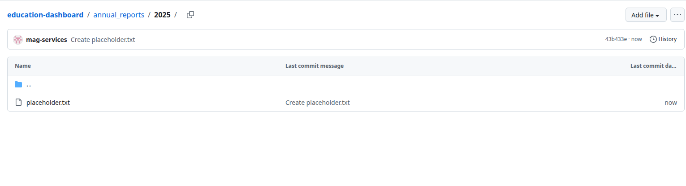
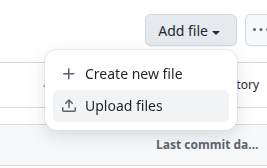
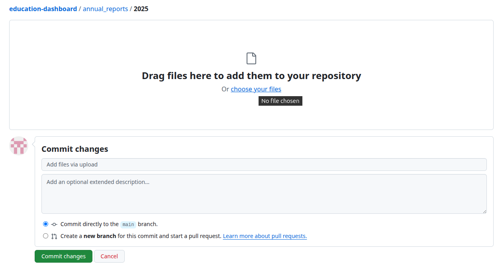
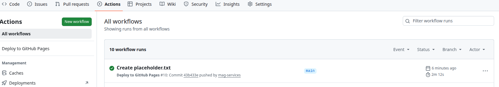

How to Update the Education Dashboard with a New Report
Overview
This guide explains how to add a new year’s MoET Annual Report to the Vanuatu Education Dashboard. You do not need to know programming or use Git. You will upload the PDF file directly through the GitHub website.
Dashboard repository: https://github.com/VBoS-Social-Section/education-dashboard
When you upload a new report and save your changes, GitHub automatically runs a process that:
- Extracts data from the PDF
- Rebuilds the dashboard
- Updates the live website (if hosted on GitHub Pages)
You only need to upload the file. The rest is automatic.
Step 1: Open the repository
- Open your web browser (Chrome, Firefox, Edge, etc.).
- Go to: https://github.com/VBoS-Social-Section/education-dashboard
- You should see the project files (folders like
annual_reports,src,public, etc.).

Step 2: Go to the annual reports folder
- In the list of files and folders, find
annual_reports. - Click on
annual_reportsto open it.

Step 3: Create a folder for the new year
- Click the “Add file” button (top right).
- Select “Create new file” from the dropdown.

- In the file name box at the top, type:
2025/placeholder.txt
(Replace2025with the year of your report, e.g.2026for the 2026 report. The/creates the folder.) - In the editor area, type anything (e.g.
x) so the file is not empty. - Scroll down and click “Commit new file” (green button).
- This creates a new folder for that year.
If a folder for your year already exists (e.g. 2025), skip this step and go to Step 4. You can upload directly into that folder.

Step 4: Upload the MoET report PDF
- Open the folder you created (e.g.
2025). - Delete the placeholder file if you created one: click
placeholder.txt, then click the trash icon, and commit the change. - Click “Add file” → “Upload files”.
- Drag your MoET Annual Report PDF into the upload area, or click “choose your files” to browse.
- The filename should include the year (e.g.
MoET-Statistical-Report-2025.pdfor2025 MoET Report.pdf). This helps the system recognise the year. - Add a short note in the commit message box, e.g. “Add 2025 annual report”.
- Click “Commit changes” (green button).


Step 5: Wait for the automatic build
- After you commit, GitHub will automatically start building the dashboard.
- To check the status, click the “Actions” tab at the top of the repository.
- You should see a workflow run. A yellow circle means it is running; a green tick means it finished successfully.
- The build usually takes 2–5 minutes.

Step 6: View the updated dashboard
Once the build completes successfully:
- If the dashboard is hosted on GitHub Pages, it will update automatically.
- Open the dashboard URL (e.g.
https://vbos-social-section.github.io/education-dashboard/— check with your team for the exact URL). - Use the year filter to select the new year and confirm the new data appears.
Troubleshooting
The build failed (red X in Actions)
- Check that the PDF is a valid MoET Annual Statistical Report.
- Ensure the report format matches previous years (Tables 1, 3, 4 for Enrolment, Schools, Teachers).
- If the report layout has changed, a developer may need to update the extraction script.
I don’t have permission to upload
- You need write access to the repository. Ask your administrator to add you as a collaborator or to upload the file for you.
The new year doesn’t appear in the dashboard
- Wait a few minutes for the build to finish.
- Refresh the dashboard page (Ctrl+F5 or Cmd+Shift+R).
- Clear your browser cache if needed.
Summary
| Step | Action |
|---|---|
| 1 | Open https://github.com/VBoS-Social-Section/education-dashboard |
| 2 | Go to the annual_reports folder |
| 3 | Create a folder for the year (e.g. 2025) if it doesn’t exist |
| 4 | Upload the MoET PDF into that folder and commit |
| 5 | Wait for the automatic build (2–5 minutes) |
| 6 | View the updated dashboard |
Need help?
Contact your dashboard administrator or the VBoS Social Section team for support.